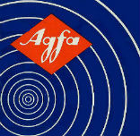

Аудиокассеты AGFA 1966-69

Agfa - один из старейших немецких концернов с производством в Леверкузене. Начинал с производства фототоваров и красок для тканей; во время Первой мировой войны штамповал фильтры для фронтовых противогазов. После Второй Мировой Войны и разгрома Германии, Agfa потеряла часть своих заводов, поскольку они оказались на территории новообразованной Германской Демократической Республики. Это привело к тому, что доля некогда процветающей фирмы на мировом рынке стала ничтожной. Чтобы выйти из этой ситуации и вновь составить достойную конкуренцию ведущим мировым химическим концернам, дела которых шли блестяще, в 1964 году было принято стратегическое решение о слиянии с бельгийской фирмой Gevaert.
Результатом слияния этих двух крупных фирм стало создание новых видов фото- и киноплёнок отличного качества, новых эмульсий, сделанных по самым современным технологиям, и других фотопродуктов. А поскольку 60-е годы были временем становления такого суперсовременного на тот момент формата звукозаписи, как компакт-кассеты, то их производство стало отдельным крупным направлением деятельности Agfa-Gevaert. Выпуск магнитных лент для аудио- и видеозаписи под этой маркой просуществует ровно четверть века: в 1991 году леверкузенский завод продаст их производство своему ближайшему конкуренту BASF, и тот это производство вскоре закроет. После этого интересы Agfa сместятся в область печатных процессов и медицинских систем.
А пока 1966 год, первая аудиокассета AGFA. Она была простейшей, как все кассеты того времени; лента имела довольно высокий уровень шума. От последующих эту модель отличает наличие на логотипе красной полосы, на которой значится надпись magnetonband ("магнитная лента").
{kind=link}
{kind=link}
2.jpg){kind=link}
{kind=link}
{kind=link}
{kind=link}